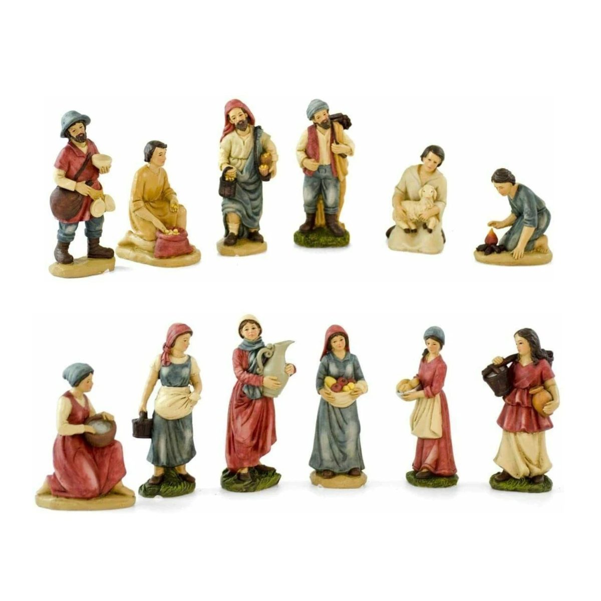
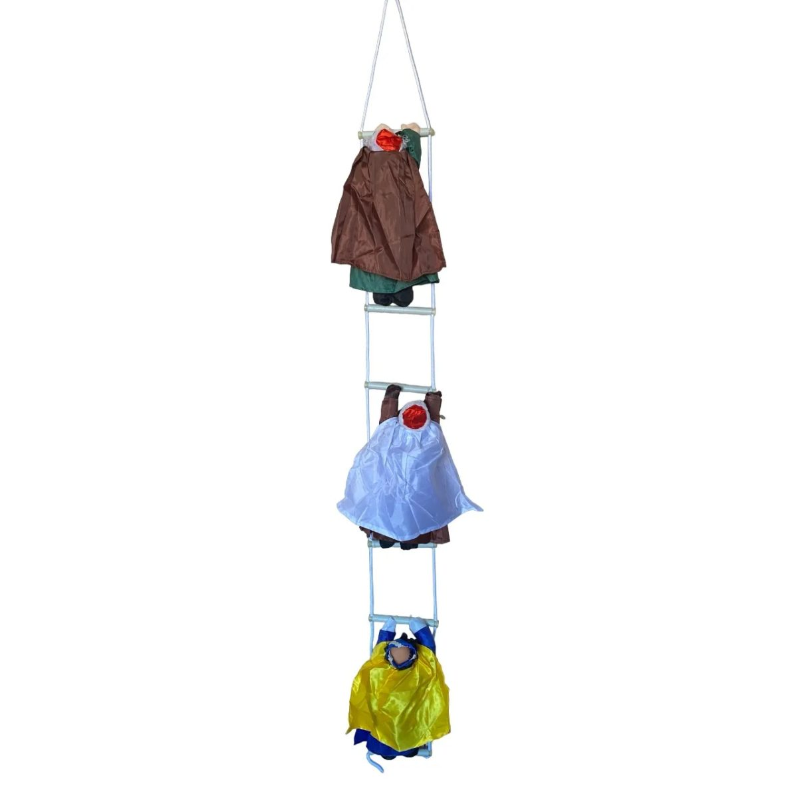
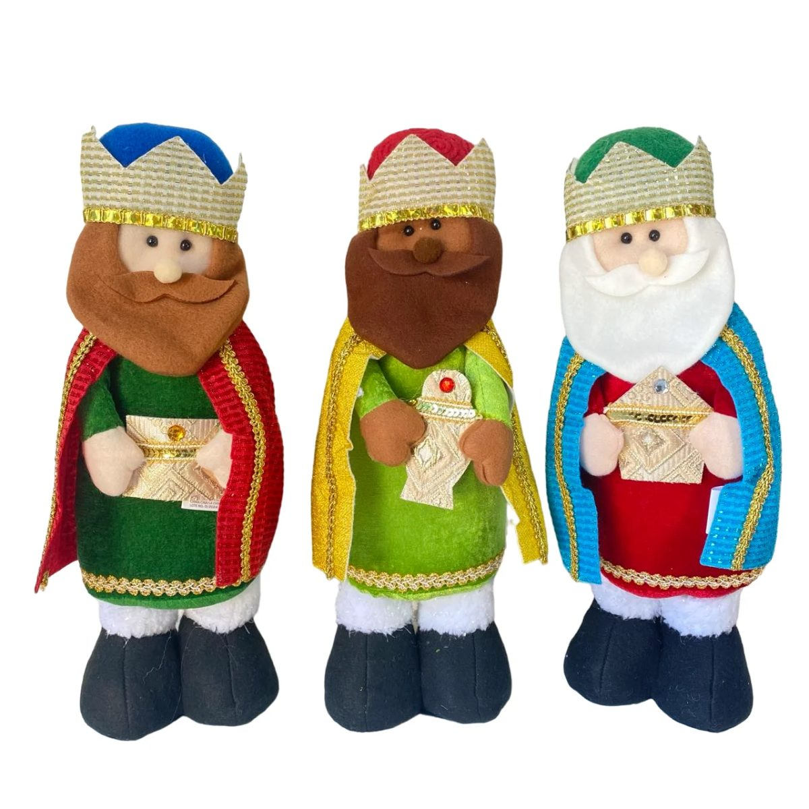

Cómo montar un belén en casa paso a paso (y qué figuras necesitas)

Montar el belén es, en muchas casas, el momento en que empieza la Navidad de verdad. No hace falta un belén de exposición: con unas pocas figuras bien colocadas y un paisaje sencillo queda precioso, y es un plan perfecto para hacer con los niños.
Cuándo se pone el belén
La tradición en España es montarlo el 8 de diciembre, día de la Inmaculada, y quitarlo después de Reyes (muchas familias esperan al 2 de febrero, la Candelaria). Si lo montas antes, no pasa nada: lo importante es que lo disfrutéis.
Las figuras que no pueden faltar
- La Sagrada Familia: la Virgen María, San José y el Niño Jesús. El Niño, según la tradición, no se pone hasta la noche del 24.
- El buey y la mula, que dan calor al Niño en el portal.
- Los tres Reyes Magos: Melchor, Gaspar y Baltasar.
- Un ángel o la estrella encima del portal.
- Pastores con sus ovejas y oficios, para dar vida al resto del paisaje.
Nuestro belén de 8 figuras de 12 cm trae la Sagrada Familia, los tres Reyes, el buey y la mula, pintados a mano. Para completarlo, los 6 pastores son del mismo tamaño.
Cómo hacer el paisaje (sin gastar casi nada)
- La base: una tabla o una bandeja grande cubierta con papel marrón arrugado, que hace de tierra.
- Las montañas: trozos de corcho o cajas de cartón tapadas con papel de periódico arrugado y pintado.
- El musgo: en la parte delantera, para la hierba. Puede ser artificial (dura años) o el de las floristerías.
- El río: un trozo de papel de aluminio arrugado, con piedrecitas en los bordes.
- El portal: una caja de zapatos sin tapa, con palitos y paja, sirve perfectamente.
- La luz: una guirnalda pequeña de luz cálida detrás del portal y otra en el cielo, como estrellas.
El truco de los Reyes Magos
Coloca a los Reyes lejos del portal, al otro lado del belén, el día que lo montéis. Cada mañana, los niños los acercan un poquito. La noche del 5 de enero llegan por fin al portal con sus regalos. Es la forma más bonita de contar los días que faltan para Reyes.
Si no tienes sitio
- Un mini belén en caja de lata cabe en una estantería o en la mesa del recibidor, y es un detalle precioso para regalar o para el amigo invisible.
- En el balcón, los Reyes Magos trepando por una escalera son el clásico que se ve desde la calle.
- Para la entrada o junto al árbol, los Reyes Magos de tela de 31 cm.
Para guardarlo de un año para otro
Envuelve cada figura en papel de seda o de periódico y guárdalas juntas en una caja con su nombre. El musgo artificial y el corcho, en una bolsa aparte. Así, el año que viene se monta en la mitad de tiempo.
¿Quieres tenerlo para el 8 de diciembre? Mira hasta cuándo pedir.
Lo que sale en este artículo
Belén de 8 figuras de 12 cm en resina
La Sagrada Familia, los tres Reyes Magos, el buey y la mula, pintados a mano

6 pastores para el belén de 12 cm
Pastores o pastoras con sus oficios para completar el belén

Mini belén en caja de lata
Un belén diminuto dentro de una cajita dorada: detalle perfecto o amigo invisible

Reyes Magos trepando con escalera para el balcón
Los tres Reyes subiendo por una escalera de cuerda de 1,3 m: el clásico de los balcones

Los tres Reyes Magos de tela de 31 cm
Melchor, Gaspar y Baltasar de tela, para la entrada, la chimenea o junto al árbol